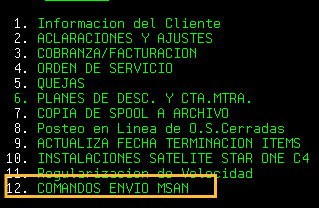
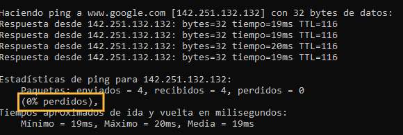

Luces Ok No navega
Preguntar al cliente por que medio se esta conectando
¿Esta conectando por cable o wifi?
Pregunta al cliente si el problema es en uno o varios dispositivos
Si es en varios dispositivo, indicar que solo se conecte uno
Valida en UMP si solo conecto un solo dispositivo
Revisa en PISA si tiene IP publica
1. Si tiene IP publica:
Realiza Queja A Gestion, colocar en el Memo: IP publica
Tipifica: Reclamo ▶ Averia ▶ Internet DSL MSAN ▶ No Navega ▶ Se genero averia
Accion a tomar:
1. Indicale al cliente que desconecte el Router.
2. Realiza Reset de puertos desde PISA:

3. Despues de Enviar el Reset, indicar que lo conecte nuevamente. Espera que las luces enciendan
4. Preguntale por el estado de las luces del Router
5. Confirma si puede navegar
Colocar IP en automatico
1. Indicarle al cliente que vas a realizar pruebas a traves del computador
Abrir la imagen
×

Realiza PING a Google
▶ Indicale al cliente que vas a realizar pruebas desde el computador
▶ Sigue los pasos de la imagen
Resultados del PING
Si Sale 0% Paquetes Perdidos:

Confirme navegacion con cliente
De ser necesario que pruebe en otros dispositivos
Tipificar como Soporte Efectivo